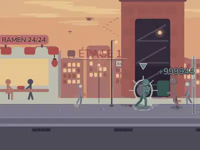
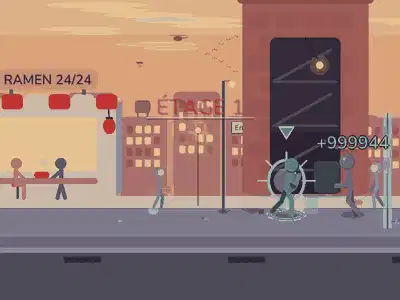
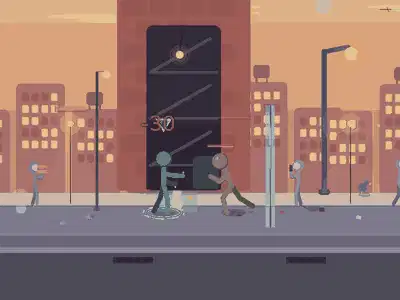
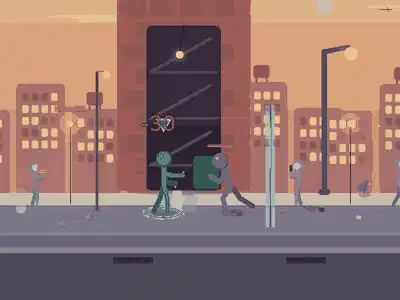
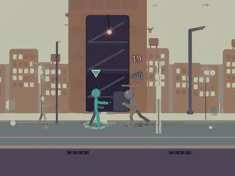
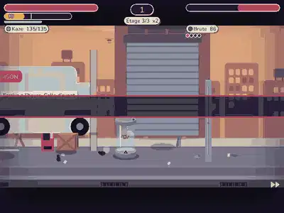
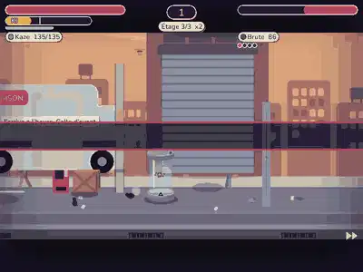

Chaque coup touche maintenant avec un effet proportionne a sa puissance : onde de choc qui deforme l'image autour du point d'impact, halo chaud, étincelles, traits de vitesse, léger vignettage et aberration chromatique sur les gros coups. Capture du vrai moteur (Sora, 844x390), a gauche AVANT (couche coupee avec AFH_NODEFORM=1), a droite APRÈS. Serveur : http://127.0.0.1:8765/.







| Palier | Deformation | Halo | Vignettage | Aberration |
|---|---|---|---|---|
| Léger | non | non | non | non |
| Moyen | 0,4 % de la hauteur | 6 % | non | non |
| Lourd | 1,1 % | 14 % | non | 0,16 % |
| Contre / Final | 1,5 a 2 % | 20 a 26 % | 12 a 20 % | 0,22 a 0,3 % |
| Super / Boss | 2,8 a 3,2 % | 32 % | 30 a 38 % | 0,4 a 0,45 % |
Complets : tout. Reduits : ni deformation ni aberration, halo et vignettage a moitie, moitie moins d'étincelles. Minimaux : aucun effet (ni flash, ni deformation, ni étincelle).
Securite : halo plafonne a 35 % de mélange (jamais d'écran blanc), au plus un flash fort toutes les 0,34 s (moins de 3 par seconde), rien n'est écrit dans la simulation ni dans le hash.
Mesures de cout : tools/playtest/effets_impact.md.